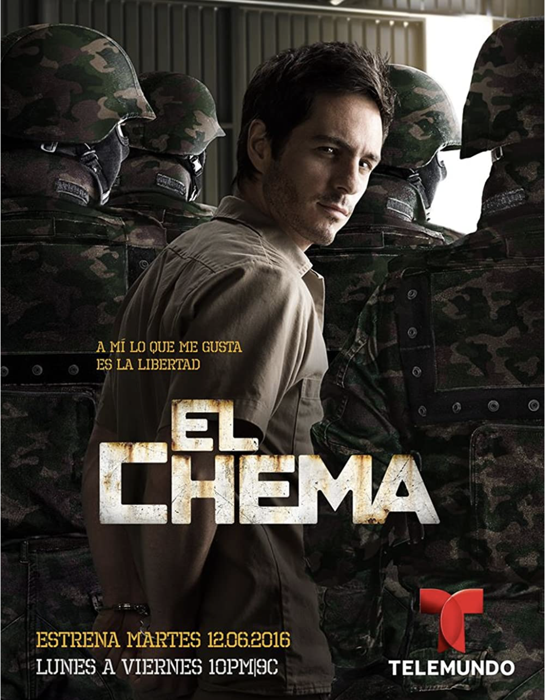
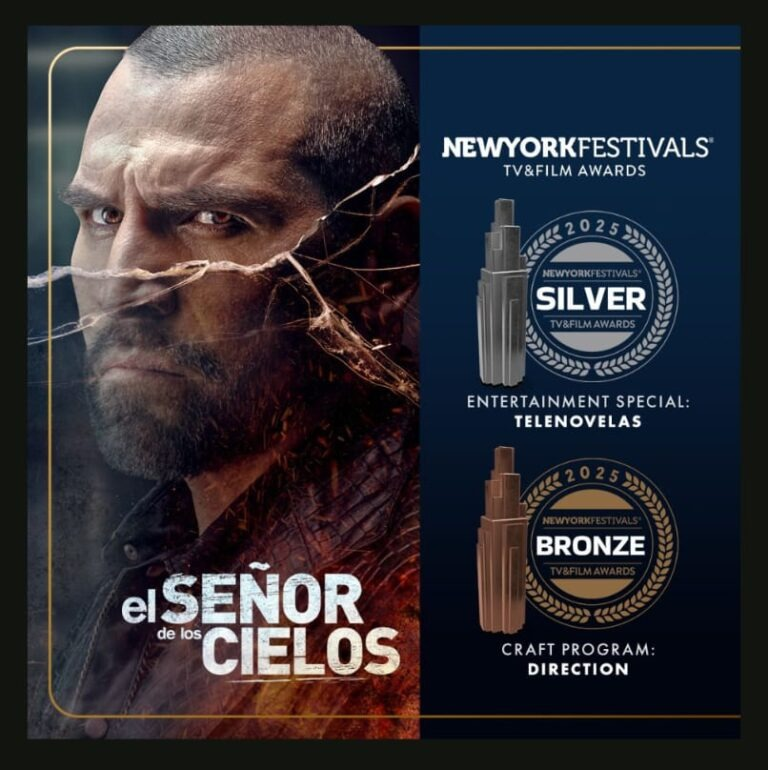
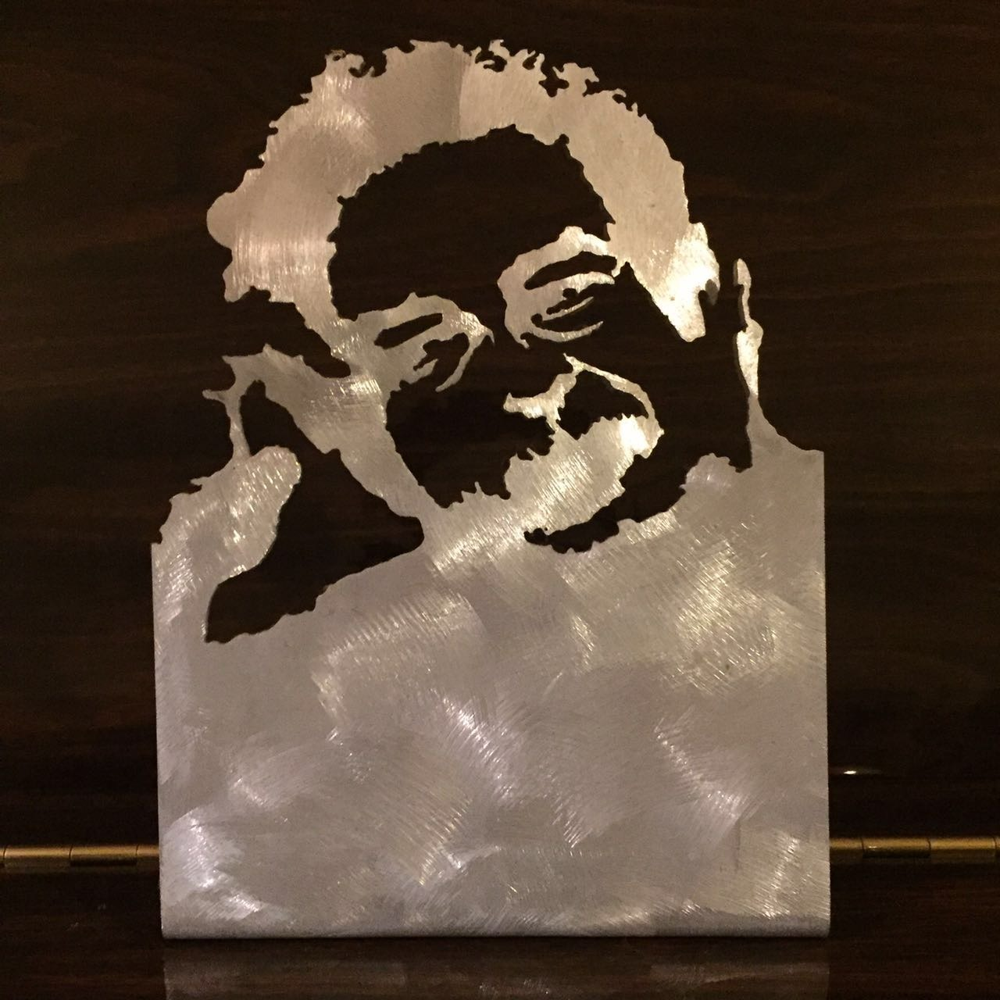

En un imperio criminal donde la lealtad se paga con sangre, una nueva generación asume el mando de la organización de narcotráfico más poderosa del continente, enfrentando una guerra donde sus mayores enemigos provienen de su propia sangre.
Escritora y guionista
De la intimidad del escenario al impacto del streaming global. Historias complejas, estructuradas para conectar con audiencias masivas.
Éxitos / Portafolio
Series, franquicias y melodramas construidos con pulso comercial, tensión emocional y personajes al borde de su propia leyenda.
Tras más de tres décadas dedicadas a la escritura para televisión y una participación ininterrumpida en más de 40 proyectos audiovisuales, destacan:
En un imperio criminal donde la lealtad se paga con sangre, una nueva generación asume el mando de la organización de narcotráfico más poderosa del continente, enfrentando una guerra donde sus mayores enemigos provienen de su propia sangre.
.jpg?v=20260609-2)
Desde la continuidad dramática de una franquicia de alto impacto, la historia expande el universo Casillas hacia una nueva generación marcada por herencias criminales, pactos familiares y guerras internas por el control del poder.

En un México prerrevolucionario dominado por la opresión, la fe de un pueblo oprimido recae sobre un bandido legendario que desafía la ley, convirtiendo su propia leyenda en el arma más peligrosa contra las élites del poder.

El ascenso meteórico de un capo fronterizo implacable, cuya ambición por dominar el narcotráfico a nivel global lo lleva a cruzar fronteras físicas y morales en un camino sin retorno donde sobrevivir es el mayor desafío.

En un entorno de secretos familiares e infidelidades corporativas, las traiciones sentimentales y los choques de poder obligan a sus protagonistas a deconstruir sus vidas, revelando que el precio de la redención suele ser el más alto.

Tras años en prisión por un delito menor, Valeria Aguirre recupera su libertad con un objetivo: vengarse del fiscal que marcó su destino. Pero el amor, el poder y una verdad familiar inesperada transforman la revancha en una batalla emocional.
Biografía
Con más de tres décadas de trayectoria en la industria audiovisual y teatral, Iris Dubs es una de las firmas clave en el desarrollo de la ficción dramática contemporánea en español. Como parte del equipo de guionistas de la multipremiada franquicia El Señor de los Cielos, ganadora del Emmy Internacional, y de universos derivados como El Chema, Malverde: El Santo Patrón y La Dinastía Casillas, ha consolidado una voz especializada en narrativas de alta tensión, acción y continuidad dramática.
Desde la dirección literaria hasta la creación de formatos originales, su trabajo equilibra rigor estructural, lectura de mercado y un entendimiento profundo del comportamiento humano. Su mirada aporta relaciones coherentes, personajes tridimensionales y subtexto emocional: piezas esenciales para historias capaces de resonar en audiencias locales e internacionales.
Método Creativo
Una práctica narrativa construida entre teatro, televisión, investigación, presión de producción y lectura emocional del personaje.
El entendimiento del diálogo orgánico, el ritmo, el espacio dramático y las exigencias reales de producción proviene de sus raíces teatrales. Formada en el Taller Nacional de Teatro de Rajatabla, bajo la dirección de Carlos Giménez, Dubs desarrolló una visión integral de la puesta en escena como actriz, directora, productora y docente.
Su experiencia con agrupaciones como Grupo Theja, Arte Atid, Grupo Actoral 80 y Skena, junto a más de 30 montajes teatrales, le permite concebir historias desde la acción viva: personajes que hablan, se contradicen, ocupan el espacio y sostienen la atención de una audiencia.
Su formación en Comunicación Social, dramaturgia, narrativa literaria, psicología positiva e inteligencia espiritual sostiene una escritura atenta a la investigación, la información sensible y el impacto social de dramatizar crimen, violencia y poder.
Como autora y formadora de guionistas, ha trabajado la emoción humana dentro de las demandas del mercado audiovisual: deadlines, cambios de producción, continuidad narrativa y decisiones dramáticas clave en entornos de alta exigencia.
Prensa y Reconocimientos
Premios, jurados, plataformas y espacios críticos que sostienen una carrera construida entre oficio, visión y continuidad.
Reconocimientos a la Escritura Audiovisual:
Premio Tacarigua de Oro Internacional (2021-2022): Distinción otorgada como Escritora con Mayor Proyección Internacional.
Premio Inter (2013): Galardonada como Escritora del Año por la serie Dulce Amargo.
Nominaciones Especiales de Honor: Nominada al premio W.H. Phelps y al Premio José Ignacio Cabrujas como escritora de televisión por su adaptación y liderazgo de la serie Toda una Dama.
Reconocimientos y Formación Teatral:
Premio de Teatro Infantil Nacional (2005): Ganadora de la XIII Edición como productora teatral.
Premio Municipal de Teatro (1996): Reconocimiento como actriz de reparto por El Matrimonio de Bette y Boo.
Orden Mérito al Trabajo (Categoría Plata): Otorgada por su contribución al desarrollo cultural y docente en las artes escénicas.





Galería Inmersiva
Una tira cinematográfica horizontal, pensada como archivo de fotogramas para recorrer la trayectoria visual y de prensa.
Archivo Audiovisual
Una selección de apariciones, conversaciones y piezas audiovisuales para ampliar la presencia pública de Iris Dubs.


{kind=link}
{kind=link}
{kind=link}
{kind=link}
{kind=link}
{kind=link}